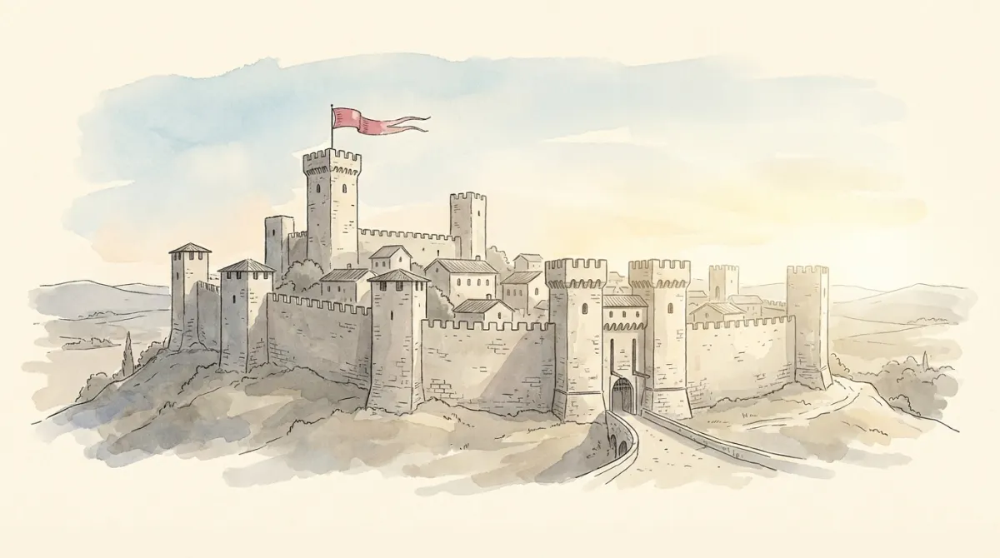

Picture the walled town from the hero image. For most of human history, that town answered to nobody in particular: an empire far away, a feudal lord nearby, a bishop, a merchant league, sometimes all four at once. The State, one organization claiming the whole territory and everyone in it, is a recent invention. And a spectacularly successful one: today the entire land surface of the planet is divided into states, and states are the main political actors on it.
The course's basic definition, worth learning word for word: the State is an organisation that issues and enforces rules, binding for the people within a territorially defined area, and claims sovereign power over that territory and its people.
Now the trick question: how many states are there? The UN has 193 members, plus 2 observers (the Vatican and Palestine), plus about 11 entities that act like states without full recognition (Taiwan, Kosovo...). The honest answer is "it depends on who is recognizing whom", and that teaches the real lesson: statehood is partly a fact on the ground and partly a status granted by others, which the course calls external sovereignty. Some things that look like states are not, and some states barely function yet keep the title.
Every state, from Iceland to India, mixes the same three ingredients:
| Territory | Land, airspace, coastal waters. The town's walls, drawn on a map. Sizes vary absurdly (Russia to San Marino) and borders can be crisp or contested. |
|---|---|
| People | The persons living together in the territory. Careful with the exam trap here: not everyone living in a state is a citizen of it. Citizens hold legally recognized rights and duties; residents may not. And whether the people share a common identity is precisely what is often contested (wait for nation-building below). |
| Sovereignty | The state holds the highest power: free and independent action within its territory (internal sovereignty) and recognition by other states as the rightful ruler of it (external sovereignty). Real sovereignty is limited in practice by capacity, markets, and international law. |
Here is Weber's famous one-liner, the most quoted sentence in this course: "the State possesses the monopoly of the legitimate use of physical force." Unpack it with the town. Many actors in town can use force: the innkeeper has fists, the merchant hires guards, the smuggler carries a knife. What makes the State different is not muscle. It is that exactly one organization's force is regarded as rightful: when its officers detain someone, we call it an arrest, not a kidnapping. Poli-01's brick slots in: this is authority applied to violence itself.
Two details the MCQs check: the monopoly is of legitimate force, not of all force (crime exists everywhere; the point is nobody else's force is recognized as rightful). And the actor that exercises the monopoly day to day is the government, the state's managing crew. The State is the organization; the government runs it (Poli-06 is about the crew).
Because the alternative is everyone hiring guards, which is anarchy priced per household. One legitimate enforcer makes rules bindable, contracts enforceable, and revenge unnecessary. The whole edifice of later lessons (constitutions, elections, courts) is the town arguing about how to control its one security company, having agreed to have one.
The modern State has a birthplace and an official birthday. The birthplace: medieval and early modern Europe (XII to XVI century), where territorial rulers began claiming independence and building armies and bureaucracies. The birthday everyone cites: the Treaty of Westphalia, 1648, which ended the Thirty Years War and consecrated the principle that each ruler is sovereign within his territory. From that seed, the modern system of states.
But individual states were born along four different paths, and the exam likes you to match examples to paths:
| Transformation | An old medieval monarchy modernizes into a state: Britain, France. |
|---|---|
| Unification | Independent political units merge: Italy and Germany in the XIX century. |
| Secession / break-up | Pieces of empires walk away: the Spanish, Ottoman, Austro-Hungarian empires, the USSR. |
| Decolonisation | Colonies become states, mostly after 1945 (the waves in section 7). |
How does a patch of land with a warlord become a modern state with pensions? Stein Rokkan's answer: in four stages, in order, each one a floor built on the last. Build the town below, floor by floor.
Two quotes the slides attach to stage 2, both exam-quotable. Massimo D'Azeglio, 1861: "We have made Italy, now we must make the Italians." A state can exist before its nation does; nation-building is the deliberate follow-up. And Benedict Anderson, 1983: nations are "imagined and socially constructed communities", imagined because no member will ever meet more than a sliver of the others, constructed because the shared history, language, and symbols are curated, taught, and sometimes invented. (Recall Poli-01's constructivist lens: this is it, applied to flags.)
Rokkan gives the floor plan; Charles Tilly names the construction crew. His thesis, compressed on the slides into one sentence: state making was intertwined with making war and extracting resources; resources are necessary to wage war, which is necessary to beat competitors and enlarge territory. The mechanism, step by step:
The State is a European invention with a distinctly non-voluntary export history: through colonialism, states were imposed on most of the world. Then the empires unwound, and UN membership (the register of external sovereignty) filled up in waves:
And today? Globalization, transnational actors, and international governance transform state sovereignty, but the course's verdict (a favorite nuance for MCQs) is precise: state power is transformed, not necessarily eroded. States remain the most authoritative actors on the planet. Poli-12 picks this thread up properly.
Having the title "state" and being able to act like one are different things. State capacity is the government's ability to actually accomplish its policy goals: keep law and order, secure property, defend the borders, tax and redistribute, build infrastructure, educate, care. Capacity is why the same policy works in Copenhagen and dies in transit elsewhere, and it strongly shapes economic development. The slides list two political preconditions for effective statehood: fiscal centralisation (one treasury that can actually extract) and impartial institutions in how resources get distributed.
At the bottom of the capacity scale sit failed states: no control of territory, no authority to make binding decisions, no ability to provide basic services or protect borders and population. Two facts the slides attach: failure correlates with colonial history and with lack of democracy, and failed states are dangerous twice over, to their own populations and to the international system around them.
"Define the State and discuss the conditions for effective statehood" writes itself from this page: the basic definition (rules, territory, binding, sovereign) for 2 points, then Weber's monopoly, the three ingredients, and capacity with its two preconditions as your discussed items, one short paragraph each. Poli-00's recipe, first outing.
Rokkan stage, birth path, or capacity problem? The reflex the exam wants:
| State (definition) | organisation issuing and enforcing rules binding for the people of a defined territory, claiming sovereignty over both |
| Three ingredients | territory · people (citizens ≠ residents) · sovereignty (internal + external; limited by capacity, markets, international law) |
| Weber | monopoly of the LEGITIMATE use of physical force; exercised by the government |
| Westphalia 1648 | ends the Thirty Years War; consecrates territorial sovereignty; birthday of the state system |
| Four birth paths | transformation (UK, France) · unification (Italy, Germany) · break-up of empires (USSR) · decolonisation |
| Rokkan's four stages | 1 state formation (penetration) → 2 nation-building (standardisation) → 3 mass democracy (equalisation) → 4 welfare state (redistribution) |
| Tilly | war made the state: armies need taxes need bureaucracies; capitalism needed the state (security, infrastructure, currency) |
| How many states? | 193 UN members + 2 observers + ~11 unrecognized: external sovereignty is granted, not just earned |
| State capacity | ability to achieve policy goals; needs fiscal centralisation + impartial institutions |
| Failed states | no territorial control, authority, or services; correlate with colonialism and non-democracy |
One town: walls, a story, raised hands, a fountain. Weber guards the gate, Tilly built it, Rokkan drew the floors.
Six questions in the written test's style.